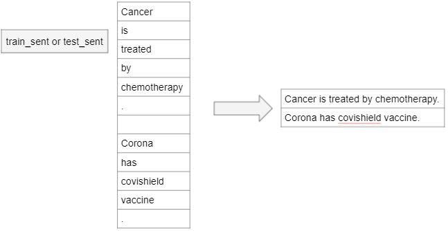
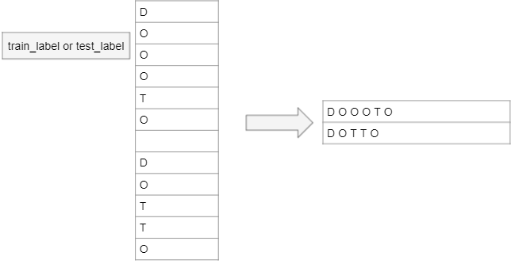

Syntactic Processing using CRF
Table of Contents
- Technologies Used
- General Info
- Conclusions
Technologies Used
- spaCy: For POS tagging and tokenization.
- sklearn: For building and evaluating the CRF model.
General Info
BeHealthy Medical NER Project
In the vast domain of medical records, identifying specific diseases and their corresponding treatments presents a significant challenge, especially given the specialized language and implicit connections between diseases and treatments.
The BeHealthy project aims to bridge this gap by developing a custom NER system to extract diseases and treatments from unstructured medical text data.



Process Overview
The project encompasses several key steps:
- Data Preprocessing: Conversion of tokenized text data into coherent sentences and corresponding label sequences.
- Concept Identification: Utilization of POS tagging to identify NOUNS and PROPNs, facilitating the extraction of medical concepts.
- Feature Definition for CRF: Designing and selecting features for the CRF model, emphasizing the importance of POS tags and the context provided by adjacent words.
- Feature and Label Extraction: Deriving feature values for sentences and corresponding label lists from preprocessed text.
- Model Training and Evaluation: Building and evaluating a CRF model based on the defined features and target labels.
- Disease and Treatment Identification: Employing the trained NER model to map diseases to their probable treatments within the dataset.
Conclusions
This project demonstrates the effectiveness of using Conditional Random Fields (CRF) for extracting medical entities from unstructured text. By leveraging POS tagging and carefully engineered features, the model can identify and map diseases to their probable treatments, providing valuable insights for medical data analysis.